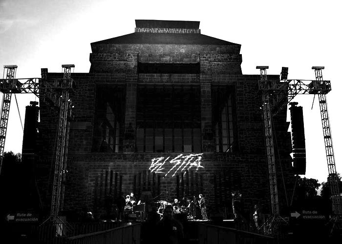
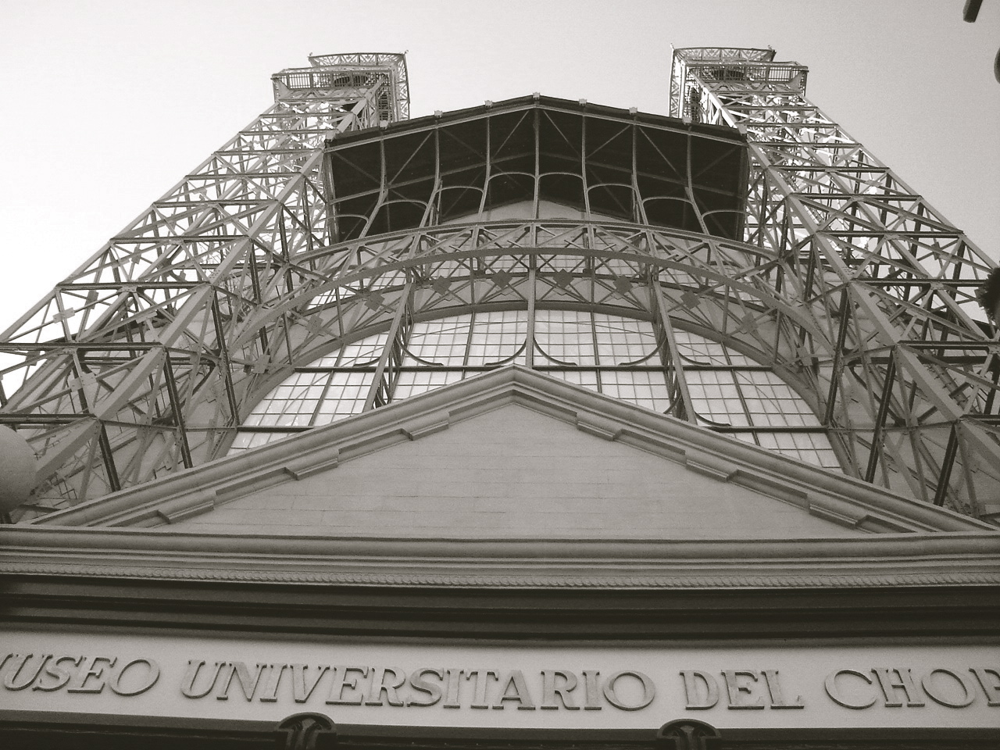
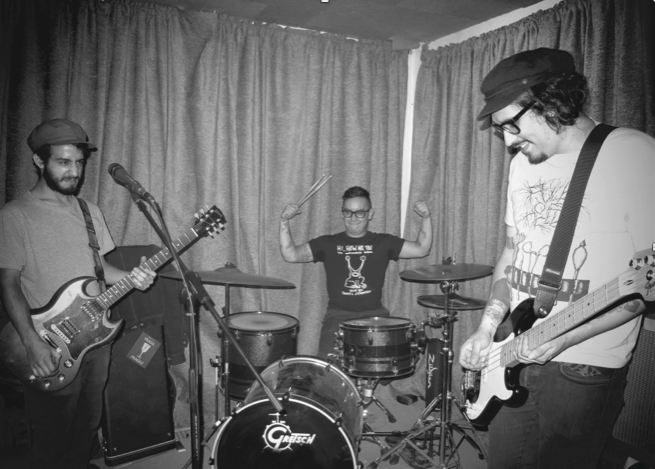
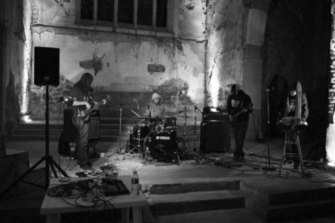
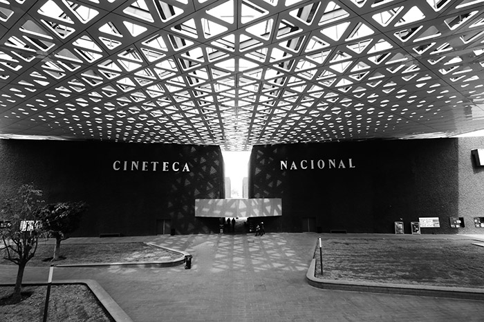

BESTIA Festival

Bestia
BESTIA es un festival internacional de música que se identifica por presentar variedad y fusión de vertientes sonoras y audiovisuales en torno a una estética atravesada por el rock, el hardcore, el metal y la distorsión.
En BESTIA participan músicos nacionales y extranjeros cuyas propuestas han encontrado eco en el ámbito internacional, así como talento emergente cuyos asaltos sónicos demuestran que es posible olvidarse de los límites y de los “buenos modales musicales”. La vocación del festival es crear un universo sonoro que llama a un público sensible y exigente en busca de ofertas musicales arriesgadas y de calidad con la finalidad de promover estas propuestas y darle su propia dimensión.
Por esta razón nos interesa crear experiencias sonoras en vivo, en las que el mundo del mainstream no se suele involucrar por encontrarse lejos de su zona de confort. Nuestra programación da cabida a bandas y proyectos que difícilmente pueden ser vistos en otros escenarios de nuestro país, porque sus sonidos se resisten a ser delimitados por etiquetas y apuestan más por difuminar las líneas divisorias entre diferentes géneros dando cabida a la improvisación y al uso del ruido como “materia prima”.
BESTIA surge como respuesta a un mundo y a un país violentado, frente a los cuales esta música y expresiones no pueden dejar de reaccionar, golpeando a su manera, los fundamentos de lo establecido.

Programación Bestia 2013
Concierto
VIERNES 29 DE NOVIEMBRE 21:00HRS
MUSEO DIEGO RIVERA ANAHUACALLI
JOHN ZORN´S MOONCHILD
TEMPLARS: IN SACRED BLOOD
MIKE PATTON | JOHN MEDEKI | TREVOR DUNN | JOEY BARON
La presentación de Moonchild en México es doblemente importante: inaugura la existencia de BESTIA Festival y con ello se suma a los festejos que este 2013 celebran conciertos del 60 aniversario de John Zorn, los cuales han tenido lugar en sitios tan prestigiados como el Museo Guggenheim el MET y el Anthology Film Archives de Nueva York. El ciclo de la gira de Moonchild culmina como el último de los festejos en la Ciudad de México el 29 de noviembre en el Museo Diego Rivera Anahuacalli.

Dedicada a Antonin Artaud, literato surrealista, Edgard Varése, compositor norteamericano, y al ocultista inglés Aleister Crowley, la primer aparición discográfica de Moonchild se dio en mayo de 2006. En ese disco homónimo aparecen los nombres de Zorn como productor, compositor, conductor y arreglista y la de tres colaboradores constantes en la fructífera carrera del neoyorquino: Trevor Dunn –al bajo-, Joey Baron –en la batería- y Mike Patton –en la voz-.
El álbum condensa la obsesión de John Zorn por la música extrema –hardcore, grindcore y metal- y por la improvisación capaz de caer siempre en una red que le dé coherencia y congruencia, haciendo así referencia a territorios que el músico y compositor domina a la perfección.
En el último disco, Templars: In Sacred Blood, se incluye la participación de John Medeski en el órgano. El disco fusiona cantos litúrgicos con avant- garde con jazz, rock e improvisación para contar la historia de los Caballeros Templarios acusados de herejía y excomulgados en 1312 por el Papa Clemente V.
MIÉRCOLES 27 DE NOVIEMBRE 20:00hrs | ENTRADA LIBRE
MUSEO UNIVERSITARIO DEL CHOPO | FORO DEL DINOSAURIO
CONCIERTO BESTIA SESIONES BANDAS MEXICANAS
ANNAPURA MONOGATARI
Como parte de la programación musical del Festival, BESTIA apuesta por talento mexicano emergente e inaugura la sección de música con Monogatari y Annapura en el tradicional Museo Universitario del Chopo, el cual se ha destacado por su vocación para dar lugar y exhibición a expresiones contestatarias.
John Zorn

(Nueva York, 1953) Saxofonista, compositor, improvisador, multi instrumentista, productor, arreglista y creador de su propio sello discográfico.
La obra de Zorn, plasmada en una miríada de grabaciones y presente en documentales, películas y animaciones, recorre un enorme espectro musical que va desde trabajos en los que retoma las tradiciones musicales del judaísmo hasta el grindcore jazz y la experimentación libre de alto riesgo, pasando por piezas mediadas lo mismo por la música creada para caricaturas que por el metal extremo o la música clásica.
Naked City, Masada, Painkiller y, por supuesto, Moonchild, son algunos de los ensambles y bandas más reconocibles de Zorn, uno de los genios musicales más prolíficos de nuestro tiempo.
Mike Patton

(California, 1968) Desde sus días con Mr. Bungle -una banda sui generis que pudo firmar un contrato con un sello disquero en los noventa-, Mike Patton se volvió una figura de culto en la arena de la música alternativa, culto que se consolidó al máximo cuando se puso al frente de Faith No More.
Pero Patton es algo más que un ícono del rock alternativo. Su interés por emplear la voz como instrumento, desarrollando y ampliando diversas técnicas, lo han convertido en uno de los vocalistas más dinámicos que igual puede figurar en una banda de alto decibelaje como Fantômas o crear un disco como Adult Themes for Voices empleando su voz —procesada electrónicamente— como una fuente de sonido desconcertante que confronta en todo momento al escucha.
Patton forma parte de Moonchild desde su primera encarnación como trío, haciéndose cargo, por supuesto, de la voz.
John Medeski

(Kentucky, 1965) Al intrincado rompecabezas que es el paisaje jazzístico de Nueva York le faltaría una pieza central si sustrajéramos al trío que John Medeski encabeza desde 1991, como organista y tecladista, junto con el bajista Cris Wood y el baterista Billy Martin.
Los senderos de exploración abiertos por MM&W han dejado una huella indeleble en la música de improvisación, convirtiéndolos en uno de los tríos más identificables de la actualidad, responsable por su frescura de introducir a nuevas generaciones al jazz. La lista de colaboraciones de Medeski con otros músicos es nutrida, e incluye, por ejemplo, a T Bone Burnett, Susana Baca y Dan the Automator.
La participación de Medeski junto con Zorn, Patton, Baron y Dunn, está plasmada en el álbum Templars: In Sacred Blood (Tzadik, 2012).
Trevor Dunn

(California, 1968) Dunn cita entre sus primeras influencias musicales a los Beach Boys, Snoopy, KISS y Blondie.
Bajista y contrabajista, Dunn junto con Patton parecen ser catalizadores, el uno del otro, de su fuerza musical ya que han sumado su talento desde los días de Mr. Bungle y, más recientemente, en Fantomas y Tomahawk.
Como bajista y líder Trevor es responsable, entre otras cosas, de la formación de la banda MadLove, creadora de un pop abierto a la experimentación y del Trevor Dunn’s Trio-Convulsant, en donde la técnica y precisión del jazz y lo espacioso de la improvisación libre se entrelazan a la perfección con asaltos de hardcore y metal.
Como contrabajista Dunn fue parte del quinteto Tyft, acompañado por el guitarrista islandés Hilmar Jensson. Trevor ha sido enlistado en las filas del ensamble Electric Masada de Zorn y ha sido parte de Moonchild desde el principio.
Joey Baron

(Virginia, 1955) Disputarse títulos tan subjetivos y volátiles como el “mejor baterista americano de jazz” puede resultar completamente ocioso.
Joey Baron tiene en su sello un dominio técnico de la batería tal que le permite cumplir la aspiración de muchos: hacer de cada ritmo algo musical. John Zorn, Bill Frisell, Dave Douglas le han confiado la parte rítmica por años y continuamente.
David Bowie lo requirió para grabar el Outside y Laurie Anderson su Strange Angels; la vanguardia japonesa extrema, representada por Keiji Haino, también demandó sus servicios; pero igual Fred Frith y el guitarrista de jazz John Abercrombie. Incluso Tony Bennett… y estos son sólo algunos, el espacio no da para más.
Nada de lo que da cabida a una batería le es ajeno a Baron, del pop al jazz, de la improvisación libre y el hardcore, a la música sinfónica; Baron tiene las credenciales para cubrir todo y ser reconocido siempre. ¿Es eso ser uno de los mejores? Tajantemente sí. Joey Baron ha participado en Moonchild desde el inicio del proyecto.
ANNAPURA
Annapura es una banda mexicana con fuertes influencias de d-beat, crust y thrash. La banda surge de la necesidad de crear música agresiva y concisa que se mueve dentro de todos los círculos y clases sociales de cualquier lugar del mundo. Con menos de un año de existencia se han abierto camino dentro de la escena hard-core del país; han desarrollado un sonido propio y particular gracias a las influencias y habilidades que cada uno de los integrantes ha aportado a la banda.
MONOGATARI
Monogatari es un grupo mexicano de música experimental que propone una mezcla de punk, harsh noise y hard-core. Basa su sonido en la utilización de efectos, sintetizadores, distorsiones y la improvisación, para crear texturas densas y caóticas. Sus letras e imagen son una alegoría del absurdo. Las influencias más notables son la ola noise-core de principios del 2000 y la no-wave de los 70. En uno de sus compilados aparecen editados por Indian Gold Records.
Ciclo de cine
BESTIA CINE
Un ciclo curado por John Zorn
En el marco de los festejos por el 60 aniversario de John Zorn realizados en Estados Unidos, Europa y Latinoamérica en 2013, se incluyeron retrospectivas fílmicas como la organizada por el Anthology Films Archives de Nueva York donde se presenta su trabajo realizado para música de películas. Para inaugurar la primera edición del Festival John Zorn realizó una selección de cintas que se presentaron en Cineteca Nacional del 25 al 29 y del 27 al 28 de noviembre en Cine Tonalá.
La creación musical de John Zorn se ha extendido hasta territorios cinematográficos en donde ha compuesto piezas para más de cuarenta títulos. La magnitud de su contribución se ha manifestado en trabajos de diferentes culturas y géneros en donde Zorn siempre logra ubicar su personalidad en el ritmo y crear atmósferas narrativas que a veces se funden con los demás elementos cinematográficos y a veces se impone como un personaje que observa y comenta lo que sucede.
El programa quedó compuesto por Workingman´s death (2005) de Michael Glawogger, Nobel Prize Winner (2010) de Timo Veltkamp, The Black Glove (1997) de Maria Beatty, Boy (The rain horse) (2008) de Dmitry Geller, Belle de nature (2009) de Maria Beatty, Kiya Kiya (2011) de Akino Kondoh y Well then there now (2011) de Lewis Klahr.
Este grupo de cintas propone un contraste de propuestas que van desde los films de animación hasta los largometrajes de vanguardia producidos a lo largo de tres décadas entre Estados Unidos, Rusia y Japón. A través de estos trabajos Zorn expone la variedad de sus acercamientos conceptuales a la creación y la riqueza de su discurso.
Si bien en los largometrajes de más reciente producción se puede identificar, con cierta familiaridad, el estilo de Zorn que irrumpe en la cotidianeidad en The Nobel Prize Winner (2010) para darle vida propia a la maquinaria narrativa que plantea el cineasta holandés Timo Veltkamp; en el caso de la emblemática cinta del autor austriaco Michael Glawogger, Workingman´s death (2005), el talento de ambos se encuentra y crean una sinfonía en donde la imagen y la música son guiados por el trabajo sobrehumano que los hombres desempeñan en un paisaje adverso.
Este ciclo nos permite acceder al inmenso mundo que el músico ha elaborado en torno a la composición a partir del ángulo cinematográfico, el cual se confina como otra de las propuestas que incluye BESTIA Festival como parte de su oferta audiovisual.
Michel Lipkes
Conoce el ciclo de BESTIA cine que se llevará a cabo en la Cineteca Nacional: http://goo.gl/53rOCG
KIYA KIYA
PROGRAMA DE CORTOMETRAJES / ANIMACIONES
Directora: Akino Kondoh Música: John Zorn Año: 2010-2011 País: Japón Duración: 6.5 min
Esta animación de seis minutos y medio tardó un año en realizarse por el cuidado que conlleva cada cuadro: 15 cuadros por segundo. El cortometraje es sólo la historia de Eiko, una niña/mujer, que utiliza la tradicional caja de imágenes que se ocupa en Japón desde el siglo XII para contarle historias a los niños. Esta caja, conocida como “kamishibai” consiste en la unión de múltiples imágenes y cada cartón contiene su historia en la parte trasera. El hiragana (silabario japonés) que aparece en la parte trasera de cada imagen es una transformación de los kanjis con el alfabeto latino que hizo Akino Kondoh con el fin de que la palabra no distrajera al espectador. Eiko es un personaje multifacético que se va desdoblando en diversas personalidades, los colores por los que se transforman sus historias están acompañadas por los compases que compuso John Zorn para la trama de esta animación.
Cineteca Nacional
Cine Tonalá
BOY (THE RAIN HORSE)
PROGRAMA DE CORTOMETRAJES / ANIMACIONES
Director: Dmitry Geller Música: John Zorn Año: 2008 País: Rusia-China Duración: 16 min
Esta animación narra la historia de un caballo durante el invierno. Los árboles secos, la nieve pesada, el ambiente tenso, una manada de caballos y el mar funcionan como símbolos que rodean al protagonista: un caballo. El simbolismo y su representación son los elementos que acompañan al protagonista mientras narra sus aventuras de exclusión y de dolor a través del Leviatán, que al final, como a un Job, lo vomita para ser salvado. John Zorn crea dos ambientes: el mar y la tierra. La música de Zorn, cello, violín, piano y voz de ElenaKamburova, genera la tensión, la armonía y la resolución del film. Cada escenario tiene un semblante diferente que hacen de la historia una metáfora abierta a la interpretación.
Cineteca Nacional
Cine Tonalá
BELLE DE NATURE
PROGRAMA DE ANIMACIONES
Directora: Maria Beatty Música: John Zorn Año: 2009 País: Francia Duración: 12.35 min 35mm
Cortometraje en donde el espectador se asoma a la vida íntima de Clara. La protagonista se reúne con su amante rodeada por un bosque, zarzas ardientes y claras referencias al universo de D.H. Lawrence. La música escrita por John Zorn sirve como disparador de un ambiente sensual en donde la desnudez de Clara, su respiración y sus pasos se van uniendo lentamente con todo el medio que le rodea hasta hacerse uno. Zorn, en colaboración con Maria Beatty, se preocupó por crear un paisaje sonoro que respiraran los personajes y dan como resultado un film erótico que explora los bordes del deseo.
Cineteca Nacional
Cine Tonalá
THE BLACK GLOVE
PROGRAMA DE CORTOMETRAJES / ANIMACIONES
Directora: Maria Beatty Música: John Zorn Año: 1997 País: Estados Unidos Duración: 27 min Motion picture
Este mediometraje erótico en blanco y negro es protagonizada por la misma directora, Maria Beatty. Se trata de un film que muestra la sexualidad femenina en donde se juega el deseo y el fetiche, utilizando una estética que nos recuerda el cine negro. La música de John Zorn emerge en este escenario con un estilo sobrio, tonos libres y fragmentos de una voz que tararea una melodía con la que logra, en conjunto, un ambiente sonoro que determina el ritmo de la narración fílmica. The Black Glove señala el límite de una relación sadomasoquista entre dos lesbianas, las fantasías revelan un film que se inscribe en el género “erótica negra”.
Cineteca Nacional
Cine Tonalá
NOBEL PRIZE WINNER
Director: Timo Veltkamp Música: John Zorn Año: 2010 País: Holanda Duración: 90 min Digital video
Nobel Prize Winner es una comedia negra que nos narra la historia de un escritor que ha terminado una novela y a punto de enviarla por correo a una editorial de prestigio decide tirarla a la basura y suicidarse. Por azares del destino, un vecino ve el sobre tirado y lo coloca en el correo; el manuscrito llega a la editorial. Los enredos, equívocos y situaciones bizarras que se comienzan a entretejer en esta trama hacen que sea una extraordinaria historia con revelaciones imprevistas. El score fue encargado a John Zorn quien ideó un trío con la colaboración del pianista Rob Burger, el bajista Trevor Dunn y baterista Kenny Wollesen. Las 15 pistas están ligadas por una narrativa musical que comparten una misma raíz y se desarrollan armónicamente a lo largo de los 90 minutos que dura la película.
Cineteca Nacional
WORKINGMAN’S DEATH
Director: Michael Glawogger Música: John Zorn Año: 2005 País: Austria – Alemania Duración: 122 min 35mm
Workingman’s death es un documental que señala escenas de la vida de hombres que trabajan en condiciones imposibles. El cineasta lleva a cabo un recorrido desde las minas ilegales de Ucrania hasta los trabajadores de acero en China. El film capta el trabajo que involucra la salud y la vida de las personas en las minas, mataderos y fábricas, captando el rostro de aquellos que tienen la esperanza de obtener un futuro mejor. El score realizado por John Zorn, en colaboración con Cyro Baptista y Ikue Mori, acompasa el ruido de las máquinas, el trabajo de la mina con percusiones y música electrónica, a veces mezclándose con los ambientes sonoros del lugar de trabajo, con las voces de los hombres y el crujir del metal. El documental es una constante muestra de los trabajos que requieren del esfuerzo físico y la música está creada con esa misma intensidad epidérmica.
Cineteca Nacional
Bestia sesiones
BESTIA Sesiones surge para promover a bandas mexicanas a través de presentaciones en vivo así como de grabaciones audiovisuales que estarán en línea en las plataformas del Festival. También consiste en presentaciones en vivo, las cuales tendrán por sede el Museo Universitario del Chopo. Se trata de talento nacional que BESTIA considera importante destacar dentro del panorama de propuestas emergentes en nuestro país. La realización de estas sesiones quedaron a cargo de Papagayo Estudio Este año, BESTIA Sesiones se realiza con el apoyo de ARCA Laboratorio Creativo y presentan para esta primera edición a Monogatari y Annapura.
annapura Coliformes
monogatari Some Boys
annapura Opinión
monogatari it´s mine it´s yours
annapura armas del control
monogatari Today
Gráfica
La gráfica dentro de BESTIA Festival busca dialogar con la música y las artes visuales; generar nuevos significados en el territorio de lo artístico y político a través del arte. Cada año tiene la intención de invitar a un artista para reflexionar sobre las prácticas disidentes en el arte contemporáneo. Este año tendrá como invitado al artista urbano Mother’s. La curaduría está a cargo de Idalia Sautto y Paola Uribe que han nombrado como BESTIA Territorios a las diferentes acciones que llevará a cabo el artista.
BESTIA TERRITORIOS
BESTIA Territorios tiene como objetivo la apropiación y resignificación del espacio fuera de los lugares convencionales del circuito artístico. El artista visual Mother’s ha intervenido las calles de la ciudad de México a través del grafiti, la pintura mural y la ilustración. El arte urbano generalmente realizado por artistas y colectivos anónimos se revela por transgredir las normas establecidas en la ciudad. En esta ocasión se busca hacer de las calles la manifestación del diálogo de la expresiones gráficas con la música. BESTIA Territorios muestra el desplazamiento del arte hacia las calles como una forma más de hacer política.
MOTHER´S
Marco González (ciudad de México, 1982) mejor conocido como Mother’s, estudió diseño y comunicación visual en la Escuela Nacional de Artes Plásticas (ENAP). Ha pintado murales y realizado grafiti en la ciudad de México durante los últimos diez años. Su obra ha sido expuesta en el Museo de Arte Moderno, Galería Animal’s, Polyforum Cultural Siqueiros, entre otros.
Galería Bestia 2013


Asiste

Venta de boletos sin cargo por servicio.
De lunes a sábado de 13:00 a 18:00hrs en Av. Centenario 107, Col. Del Carmen
Museo Diego Rivera-Anahuacalli
Museo Diego Rivera Anahuacalli / Museo 150 San Pablo Tepetlapa, Coyoacán, 04620 Cd de México, DF. museoanahuacalli.org.mxMuseo Universitario del Chopo
Cineteca Nacional
Cine Tonalá
Patrocinadores & Aliados
Una iniciativa de


{kind=link}